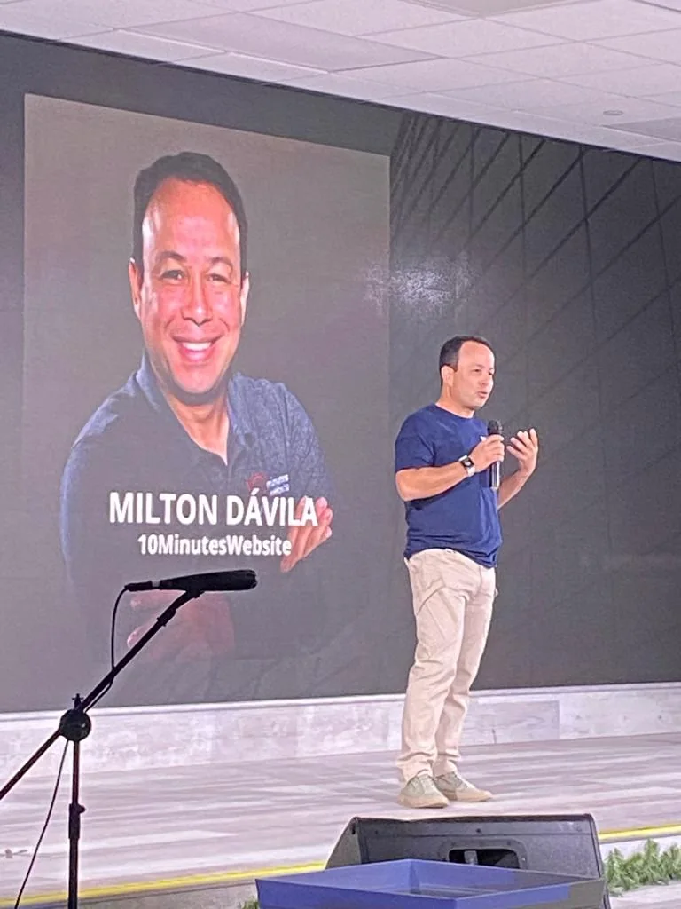
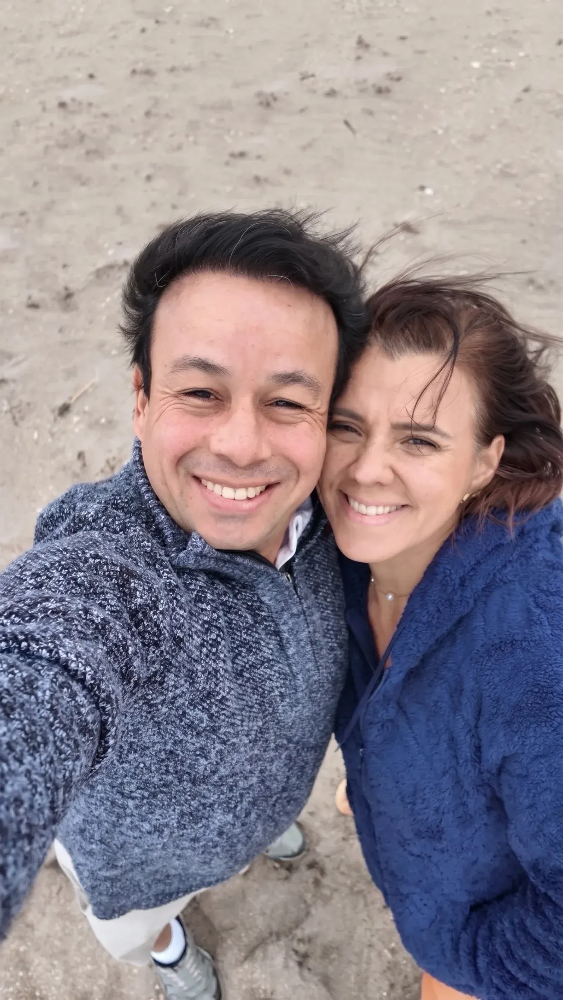

Escucho tu situación
Entiendo qué quieres lograr, qué te está frenando y qué ya tienes funcionando.
Quién está detrás
Soy ingeniero de implementación (forward deployed engineer): trabajo dentro de tu empresa para construir, conectar y poner en marcha las herramientas que necesita. Llevo más de veinte años creando negocios, enseñando y construyendo plataformas. Hoy ayudo a las personas a usar la tecnología de forma sencilla para que su negocio avance.
Una historia de evolución
Empecé en la operación, las ventas y la dirección de empresas. Con los años sumé comercio internacional, franquicias, docencia, producción digital y marketing. Esa mezcla me permite entender tanto el problema del negocio como la tecnología que lo resuelve.

Cómo trabajo
Entiendo qué quieres lograr, qué te está frenando y qué ya tienes funcionando.
Te explico la tecnología en palabras simples para que sepas qué te conviene y qué no.
Creo, conecto o configuro lo que haga falta: web, contenido, IA, automatización o integraciones.
No solo entrego algo: me aseguro de que lo uses y de que pueda crecer contigo.
Trayectoria
Trabajé en Schlumberger de Venezuela, con formación en Estados Unidos e Inglaterra y experiencia en supervisión y coordinación operativa.
Crear y dirigir negocios me enseñó a entender las decisiones, la operación y las necesidades reales detrás de cada proyecto digital.
Fundé Creaciones Animadas y desarrollé el Centro de Ferias Virtuales, explorando nuevas formas de usar Internet para los negocios.
Construyo páginas, plataformas, automatizaciones, integraciones y soluciones con inteligencia artificial para empresas y profesionales.
Detrás de la marca
Familia, mar y caminatas. Lo que hago en la tecnología parte de ahí: de entender a las personas.

Experiencia que se puede aplicar
agentes, profesionales y clientes
en negocios y tecnología
web, voz, contenido y automatización
base actual de trabajo
Plataformas e iniciativas
En ese camino creé proyectos que me enseñaron mucho sobre presencia digital, contenido, captación de clientes y procesos de un negocio.
Plataforma automatizada para tener sitio web, captar clientes y comunicarte con ellos.
Herramientas para construir tu presencia y conseguir resultados en internet.
Un lugar que reúne herramientas y procesos digitales.
Crea artículos y contenido para redes con IA, pensado para posicionarse en Google.
Experiencias reales
★★★★★“Contar con Milton ha sido un antes y un después. Va directo al grano para que domines el SEO local.”
★★★★★“Excelente profesional, con gran conocimiento y una capacidad única para transmitirlo de manera clara y sencilla.”
★★★★★“Excelente plataforma y asesoría. Milton es un asesor excepcional: atento, profesional y con gran conocimiento.”
Tu siguiente paso
No necesitas preparar una presentación. Cuéntame qué estás intentando hacer y vemos juntos el siguiente paso.
Luego eliges WhatsApp, SMS, llamada o email.